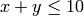
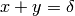
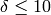

Using Mathematical Constraints¶
While being able to fix variables and place upper and lower bounds on their values are key parts of lmfit, the ability to place mathematical constraints on parameters is also highly desirable. This section describes how to do this, and what sort of parameterizations are possible -- see the asteval for further documentation.
Overview¶
Just as one can place bounds on a Parameter, or keep it fixed during the fit, so too can one place mathematical constraints on parameters. The way this is done with lmfit is to write a Parameter as a mathematical expression of the other parameters and a set of pre-defined operators and functions. The constraint expressions are simple Python statements, allowing one to place constraints like:
pars = Parameters()
pars.add('frac_curve1', value=0.5, min=0, max=1)
pars.add('frac_curve2', expr='1-frac_curve1')
as the value of the frac_curve1 parameter is updated at each step in the fit, the value of frac_curve2 will be updated so that the two values are constrained to add to 1.0. Of course, such a constraint could be placed in the fitting function, but the use of such constraints allows the end-user to modify the model of a more general-purpose fitting function.
Nearly any valid mathematical expression can be used, and a variety of built-in functions are available for flexible modeling.
Supported Operators, Functions, and Constants¶
The mathematical expressions used to define constrained Parameters need to be valid python expressions. As you'd expect, the operators '+', '-', '*', '/', '**', are supported. In fact, a much more complete set can be used, including Python's bit- and logical operators:
+, -, *, /, **, &, |, ^, <<, >>, %, and, or,
==, >, >=, <, <=, !=, ~, not, is, is not, in, not in
The values for e (2.7182818...) and pi (3.1415926...) are available, as are several supported mathematical and trigonometric function:
abs, acos, acosh, asin, asinh, atan, atan2, atanh, ceil,
copysign, cos, cosh, degrees, exp, fabs, factorial,
floor, fmod, frexp, fsum, hypot, isinf, isnan, ldexp,
log, log10, log1p, max, min, modf, pow, radians, sin,
sinh, sqrt, tan, tanh, trunc
In addition, all Parameter names will be available in the mathematical expressions. Thus, with parameters for a few peak-like functions:
pars = Parameters()
pars.add('amp_1', value=0.5, min=0, max=1)
pars.add('cen_1', value=2.2)
pars.add('wid_1', value=0.2)
The following expression are all valid:
pars.add('amp_2', expr='(2.0 - amp_1**2)')
pars.add('cen_2', expr='cen_1 * wid_2 / max(wid_1, 0.001)')
pars.add('wid_2', expr='sqrt(pi)*wid_1')
In fact, almost any valid Python expression is allowed. A notable example is that Python's 1-line if expression is supported:
pars.add('bounded', expr='param_a if test_val/2. > 100 else param_b')
which is equivalent to the more familiar:
if test_val/2. > 100:
bounded = param_a
else:
bounded = param_b
Using Inequality Constraints¶
A rather common question about how to set up constraints
that use an inequality, say, . This
can be done with algebraic constraints by recasting the
problem, as  and . That is, first, allow  to be held by the
freely varying parameter x. Next, define a parameter
delta to be variable with a maximum value of 10, and
define parameter y as delta - x:
to be held by the
freely varying parameter x. Next, define a parameter
delta to be variable with a maximum value of 10, and
define parameter y as delta - x:
pars = Parameters()
pars.add('x', value = 5, vary=True)
pars.add('delta', value = 5, max=10, vary=True)
pars.add('y', expr='delta-x')
The essential point is that an inequality still implies that a variable (here, delta) is needed to describe the constraint. The secondary point is that upper and lower bounds can be used as part of the inequality to make the definitions more convenient.
Advanced usage of Expressions in lmfit¶
The expression used in a constraint is converted to a Python Abstract Syntax Tree, which is an intermediate version of the expression -- a syntax-checked, partially compiled expression. Among other things, this means that Python's own parser is used to parse and convert the expression into something that can easily be evaluated within Python. It also means that the symbols in the expressions can point to any Python object.
In fact, the use of Python's AST allows a nearly full version of Python to be supported, without using Python's built-in eval() function. The asteval module actually supports most Python syntax, including for- and while-loops, conditional expressions, and user-defined functions. There are several unsupported Python constructs, most notably the class statement, so that new classes cannot be created, and the import statement, which helps make the asteval module safe from malicious use.
One important feature of the asteval module is that you can add domain-specific functions into the it, for later use in constraint expressions. To do this, you would use the asteval attribute of the Minimizer class, which contains a complete AST interpreter. The asteval interpreter uses a flat namespace, implemented as a single dictionary. That means you can preload any Python symbol into the namespace for the constraints:
def lorentzian(x, amp, cen, wid):
"lorentzian function: wid = half-width at half-max"
return (amp / (1 + ((x-cen)/wid)**2))
fitter = Minimizer()
fitter.asteval.symtable['lorenztian'] = lorenztian
and this lorenztian() function can now be used in constraint expressions.